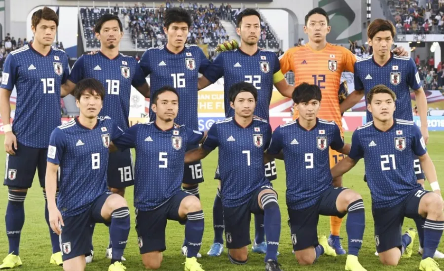

Seleção japonesa participou em 2018 de sua sexta edição da Copa do Mundo de futebol(Fará sua 7° no Qatar 2022). Desde a sua primeira participação em 1998 participa de todas as edições da Copa do Mundo. Os melhores desempenhos da seleção japonesa foram em 2002, quando o Japão era uma das sedes, em 2010 e em 2018. Nestas edições da Copa do Mundo a seleção do japão chegou às oitavas-de-final.
Não obteve títulos em Copa do Mundo.
| Data/Hora | Estádio | Adversário |
|---|---|---|
| 23 nov 2022 / 10h00 | Estádio Internacional Khalifa | Alemanha |
| 27 nov 2022 / 07h00 | Estádio Ahmad bin Ali | Costa Rica |
| 1º dez 2022 / 16h00 | Estádio Internacional Khalifa | Espanha |